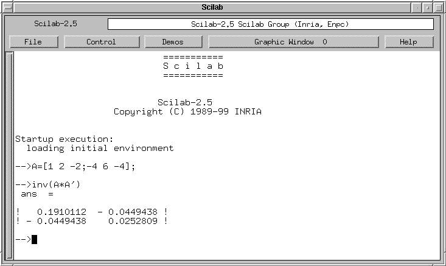
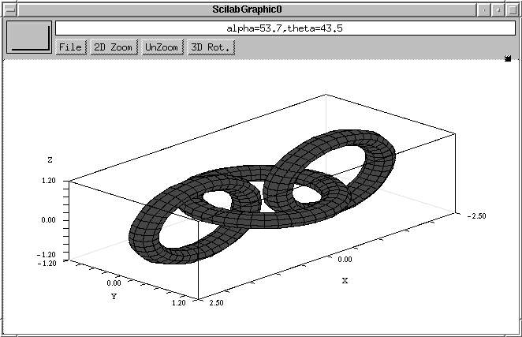
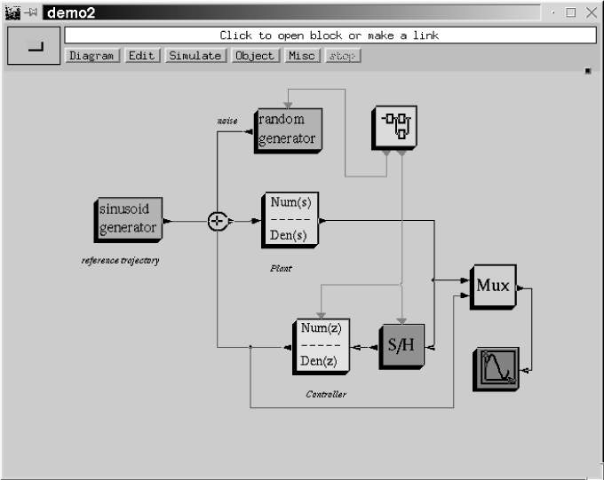

http://www.saphir-control.fr/

| http://www.saphir-control.fr/
|
http://www-rocq.inria.fr/scilab.tgz du source
environ 7 Mégas (le rpm fait lui environ 6 Mégas).
Scilab est aussi distribué sur le CD-Rom des logiciels libres à
l'INRIA Rocquencourt. On peut obtenir gratuitement ce CD-Rom en écrivant
à :
INRIA - SICS Diffusion
Distribution de Scilab
Domaine de Voluceau, B.P. 105
78153 Le Chesnay CEDEX
Il vous faut alors fournir une enveloppe (appropriée à contenir
un CD-ROM) portant vos nom et adresse, et 4 timbres français au tarif
lettre (ou un coupon-réponse international).gcc et g77 sont dans les distributions
standards. Un ``configure'' suivi d'un ``make all'' et c'est parti pour la
compilation : 10 à 15 minutes plus tard (avec un pentium assez
récent !) Scilab est prêt à démarrer. Le code
exécutable (scilex) se trouve dans le sous répertoire
bin et fait à peu près 5 Mégas. Evidemment,
les sources et les Makefiles étant disponibles, l'utilisateur plus
courageux peut même se recompiler un Scilab personnalisé à
son goût.
bin. Le script ``scilab'' définit quelques variables
d'environnment et lance le code exécutable. On obtient la fenêtre de la figure 1, un peu austère certes mais Scilab est un logiciel de type professionnel, pas un jeu en 3D ! Vu la taille du logiciel, l'utilisateur novice risque d'être un peu dérouté. Cependant, Scilab peut tout d'abord être utilisé comme une simple calculette (de luxe !). A l'invite (le ``prompt'') notée

-->, on passe une commande, Scilab
donne le résulat puis redonne -->. Après avoir
passé quelques commandes, les premiers pas se font en cliquant sur le
bouton ``démos''. En observant les démos, on commence à
voir les capacités du logiciel. On comprend vite que les objets
manipulés sont surtout des vecteurs et des matrices numériques,
ce qui donne un code très compact avec des notations matricielles
naturelles. En fait, la syntaxe de Scilab est identique à la syntaxe de
Matlab pour tout ce qui concerne les manipulations sur les vecteurs et les
matrices. Le gain par rapport à un codage en C (ou Fortran) est
énorme : pas de déclaration de types, pas de compilation, ni
d'allocation de mémoire, tout est automatique. Le prix à payer
est bien sûr celui de l'interprétation qui peut devenir
très cher pour certaines applications. Un help en ligne est disponible;
il donne la syntaxe d'appel des différentes fonctions (il y en a plus de
mille...). La plupart des fonctions sont illustrées par un exemple qu'on
peut faire tourner par un simple copier-coller à la souris depuis la
fenêtre de help vers la fenêtre Scilab. Les démos donnent
des exemples de graphiques, de traitement du signal, de commande, et de
simulation de systèmes dont la célèbre démo du
vélo, qui montre la simulation d'un vélo à partir des
équations mathématiques d'un vélo idéal se
déplaçant sans frottement sur une surface plane. Les
équations du vélo ont été obtenues à l'aide
de Maple qui génère aussi le programme numérique
exploité directement par Scilab.emacs pour lequel existe
d'ailleurs un mode scilab), puis chargés dans Scilab. Celà se
fait à la souris (Menu File operations) ou directement par
la commande getf. Un fichier peut bien sûr contenir un
nombre arbitraire de fonctions Scilab. L'utilisateur standard de Scilab passe
souvent l'essentiel de son temps à définir et mettre au point ses
fonctions en faisant de nombreux allers-retours entre son éditeur et
Scilab.examples donne (comme son nom l'indique) de nombreux exemples de
fonctions linkées dynamiquement à Scilab. Les utilisateurs
habitués à Matlab y trouveront même des fonctions
émulant les fonctions d'interfacage Matlab.
Le graphique sous Scilab est assez déroutant pour le débutant et un investissement important est nécessaire pour appréhender l'ensemble des primitives graphiques dont l'usage ``brut'' semble peu convivial. La meilleure façon de démarrer est encore de faire tourner les démos graphiques, de repérer celle qui ressemble le plus à ce que l'on veut faire, puis de modifier le script proposé dans la démo pour l'adapter à ses besoins dans une nouvelle fonction. On peut faire des graphiques 2D et 3D, des tracés de contours, des tracés paramétriques, des animations, etc. Le graphique Scilab supporte bien sûr un driver X qui interface la plupart des primitives X11. Les graphiques peuvent être exportés au format Xfig, Postscript, Gif et Postscript-Latex. La figure 2 est tirée d'une des démo graphique est obtenue en quelques lignes de code par la commande primitive graphique

plot3d2.En plus de Scicos, Scilab fournit des boites à outils dans la plupart des domaines de l'ingénierie : traitement du signal, commande, optimisation, graphes, analyse fractale, calcul parallèle, statistique, etc... Ces boites à outils sont bien sûr fournies avec la version distribuée de Scilab. À ces boites à outils s'ajoutent des contributions extérieures : l' objectif de Scilab est bien de fournir une structure d'accueil gratuite pour toutes sortes d' applications scientifiques. Les bonnes volontés sont donc mises à contribution. C'est le principe du logiciel libre : qualité et mise en commun des efforts. Une interface Tk-Tcl permet de définir des applications où l'interaction avec l'utilisateur se fait avec cet outil et les calculs numériques par les fonctions Scilab.

doc. Un livre (en Anglais et cher...) ``Engineering and Scientific
Computing with Scilab'' est paru récemment chez Birkhauser. Le site Web
de Scilab cité plus haut contient aussi de la documentation en ligne au
format HTML ou PDF et un FAQ. Il existe un Newsgroup dédié
à Scilab : comp.soft-sys.math.scilabEnfin l'équipe de Scilab à l'Inria s'efforce dans la mesure du possible de répondre aux mails envoyés à
scilab@inria.fr... This document was translated from LATEX by HEVEA.